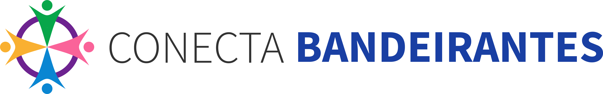
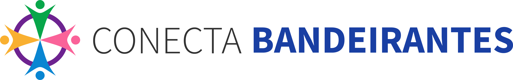

É o plano que a Prefeitura de Bandeirantes fez para organizar todos os gastos, compras e contratações que serão feitos ao longo de 2026. É como um "cardápio" de tudo que vai ser comprado ou contratado durante o ano.
Total de Contratações
Itens planejados
Orçamento Total
Investimento previsto
Prioridade Alta
Contratações urgentes
Meses Ativos
Planejamento anual
📌 Principais Áreas de Investimento
Saúde
Medicamentos, equipamentos, serviços médicos e construção de unidades de saúde.
Educação
Transporte escolar, merenda, uniformes e reforma de escolas.
Infraestrutura
Ruas, pontes, iluminação pública e manutenção urbana.
Assistência Social
Cestas básicas, auxílios e programas sociais.
Tecnologia
Sistemas informatizados e softwares para gestão.
Limpeza e Higiene
Serviços de limpeza urbana e materiais de higienização.
Como o PAC Funciona?
Assim como você faz uma lista de compras antes de ir ao mercado, a Prefeitura faz um plano de tudo que vai precisar comprar ou contratar no ano. Isso ajuda a organizar melhor o dinheiro público e a não gastar de forma desorganizada.
🔄 O Fluxo das Contratações
Planejamento da Demanda
As secretarias municipais identificam o que precisam contratar e mandam o pedido com justificativas e necessidades específicas.
Estudo Técnico
Especialistas analisam se é necessário, quanto vai custar, a viabilidade técnica e qual a melhor forma de contratar conforme as normas legais.
Cotação e Cesta de Preços
Elaboração detalhada da cesta de preços, pesquisa de mercado, análise de fornecedores e definição do orçamento estimado para licitação.
Processo de Licitação
Publicação do edital e abertura de concorrência para empresas apresentarem propostas. Análise das propostas recebidas e julgamento conforme critérios pré-estabelecidos.
Contratação
Adjudicação da licitação à empresa vencedora, assinatura do contrato e início da execução do produto/serviço contratado.
📋 Tipos de Contratações
📦 Materiais de Consumo: Itens que se esgotam com o uso (merenda escolar, medicamentos, combustível, material de higiene, etc.). Precisam ser recomprados constantemente.
🔧 Materiais Permanentes: Equipamentos e bens duráveis (computadores, móveis, equipamentos médicos, uniformes, etc.). Têm vida útil longa.
Correspondem a 58 contratações do PAC no total.
📋 Todas as Contratações
| Código | Objeto | Secretaria | Tipo | Classificação | Valor | Conclusão | Prioridade |
|---|
📅 Cronograma de Contratações 2026
❓ Perguntas Frequentes
📞 Mais Informações?
Para dúvidas sobre o PAC 2026, entre em contato com a Prefeitura de Bandeirantes:
Setor de Contratações e Licitações
Secretaria Municipal de Administração